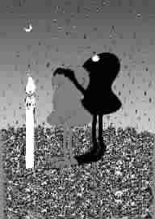

身处其中的时代
●张 柠
据说，古希腊的雅典城邦是一个最民主最自由的社会。在那里，每一个人既是劳动者，又是艺术家和政治家。他们的日常生活，主要是到地中海上去捕鱼、抢劫装香料的商船、养羊、酿造葡萄酒，等等。由于它的周围更多是些裸露的岩石，所以，从事农耕的人不多。碰上捕捞和抢劫运气不好的日子，他们就聚在一起比赛诗歌朗诵，或者从事政治活动，比如，搞民主选举，到“泛希腊集会”上去发表政治演说，说得好的，还可以被选举到“五百人议事会”中去参政议政。反正它的公民们都享有极大的教育、劳动和参政的自由。
那真是一个“黄金时代”啊！我一度对代表这个“黄金时代”的雅典精神羡慕得要死，心里想，要是自己能生活在那个时代就好了。但是，它的可疑之处随即就现出了原形。只需要举一个例子就够了：雅典城邦最伟大的思想家苏格拉底，就是被城邦的民主机器，即“五百人议事会”，以281票比220票的投票结果判处了死刑。苏格拉底之死成了早期人类历史最大的悲剧事件之一。那个“黄金时代”的神话破灭了！
1967年，《巴黎评论》的记者采访著名作家纳博科夫时问：你愿意生活在什么时代？纳博科夫支支吾吾地说了一通废话，比如未来的飞机最好是无声的，空气要新鲜，回忆自己过去舒适的生活，又深又大的浴盆等等，但只字未提他生活在其中的时代。毫无疑问，他不愿意认真地回答这种令人尴尬的、实质上没有任何意义的问题，也不愿意跟板着面孔的“历史”开什么玩笑。我知道，这位作家本质上是一位带有虚无色彩的自由主义者。
当然，也有许多伟大的理想主义者，选择了一个更美好的时代来作为对当前时代的批判，马克思就构想了一个属于未来的“黄金时代”，作为批判资本主义时代的根据：未来的世界是一个没有异化的自由世界，劳动将会成为一种美好的享受。好是好，可是我生也有涯，怕是等不到那一天了。
而中国的先哲老子则属于另一种形态的、极端的理想主义者。他对身处其中的现实极端地厌恶，认为过去才是一个“黄金时代”，后来文明的历史是一代不如一代，堕落得不成体统了。要回去是不可能的，除非人类放弃那点小聪明、小机巧，大家都变得傻起来，那还有点希望。我现在深信不疑地认为，老子也是为了骂现在，才把过去说得天花乱坠。
“时代”就是一个历史的概念，对它的选择本身就是一个历史的圈套。当我们已经发现了历史话语的阴险之处时，还有什么可选择性呢？于是，我们只好站在虚构这一边了，虚构就是逃避历史时间，而去构想一个更自由的、虚幻的时间。但是，站在虚构这一边有什么好说的呢？还不如去写小说。
现在我就要告诉你们我的选择了：我哪里也不愿意去，我就选择我身处其中的当今这个时代。因为我爱它。
(刘艺摘自《今晚报》2006年10月17日，刘宏图)